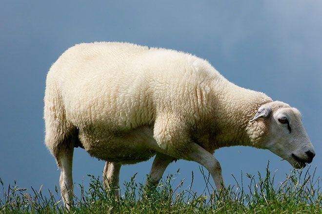

Буаз

Лексикалық мағынасы: құрсағында төлі бар, туатын мал.
Контексттегі мағынасы:
Әбіш Кекілбаев "Үркер"
Буаз әйел түс көрмейтін бе еді.
Әбіш Кекілбаев "Үркер"
Бұл күндері бұның да буаз қатыннан айырмасы қанша!
Әбіш Кекілбаев "Үркер"
Қылышын белдеуіңе байлап, найзасын шаңырағыңа шаншып іргеде жау жатқанда
мына кергілесіміз буаз қыздың құдалығында қалың малға дауласқандай ұят әңгіме
көрініп отыр маған.
Әбіш Кекілбаев "Үркер"
Қолына тізгін тимесе де, еліне елеулі, халқына қалаулы азаматтың басы алтын,
құйрығы күміс ботаға буаз боз інгендей жапырып оттап, сапырып суламай, тыраңдап
аунап, бұртаңдап туламай, өз қадірін өзі біліп, басы озар сағатты күтіп, сабыр сақтап, ақырын жүріп, анық баспағы шарт.
Әбіш Кекілбаев "Үркер"
Россияда қазір буаз мегежін іш тастап, қысыр мегежін күйлесе де, сол найсаптын бір
қатысы болғаны.
Кекілбаев Әбіш "Елең-алаң"
Тек сумақай Юмаштың ғана қара тонының қалта тұсы құсқан басқа жайылып тұрған
буаз шыбыштың бүйіріндей бүлк-бүлк етеді.